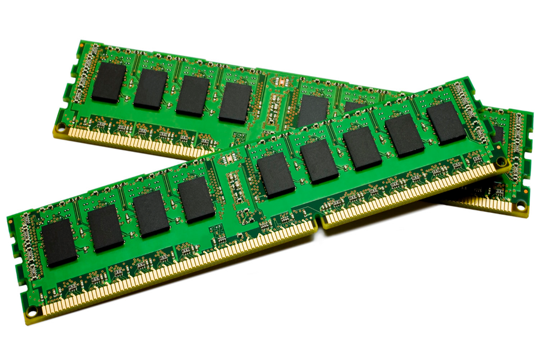

Académico
Formación
2026
Capacitación en Inteligencia Artificial
Herramientas de IA aplicadas al trabajo y a la resolución de problemas.
2026
Diseño de páginas web
Diseño y programación de sitios web con HTML y CSS. Este sitio es el proyecto del curso.
2024 y 2026
Fundamentos de programación
Bases de la lógica y la programación, cursadas en dos oportunidades.
2015 – 2025
Cursos del mundo web
Distintas capacitaciones relacionadas con la web, realizadas a lo largo de diez años.
2000
Técnico en PC
Formación base en armado, diagnóstico y reparación de computadoras.
Profesional
Experiencia
Actualidad
Fundador · SCANDAR / Doctor PC
Servicio técnico informático en Villa Devoto: reparación de PC y notebooks, formateo, eliminación de virus, upgrades, armado de equipos, redes y WiFi.
Mi enfoque profesional
Diagnóstico claro, presupuesto antes de empezar y comunicación simple con cada cliente.
Habilidades
Nivel técnico
Reparación de hardware90%
Windows y software100%
Eliminación de virus y seguridad94%
Redes y WiFi87%
Atención al cliente95%
Desarrollo web (HTML y CSS)89%
Herramientas
Memorias y discos: upgrades que mejoran el rendimiento
Tecnologías y servicios
- Windows
- Diagnóstico de hardware
- Armado de PCs
- Formateo
- Antivirus y antimalware
- Discos SSD y HDD
- Memoria RAM
- Respaldo de datos
- Routers y WiFi
- Mantenimiento preventivo
- Programación
- HTML
- CSS
- Diseño web
- Inteligencia artificial

¿Querés conocerme mejor?
Mirá la parte personal del sitio o escribime directamente.
Ver información personal WhatsApp